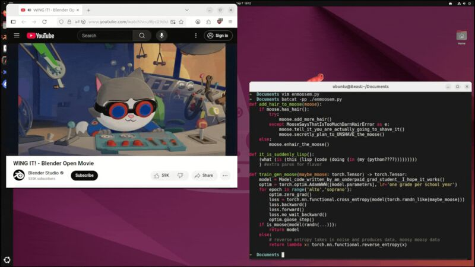
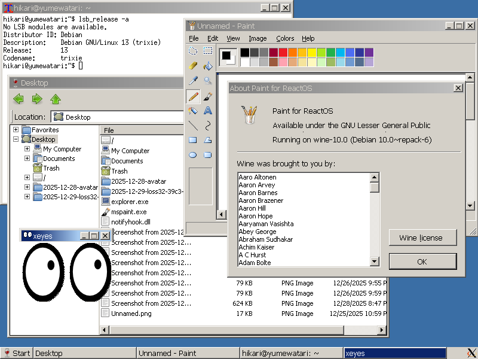
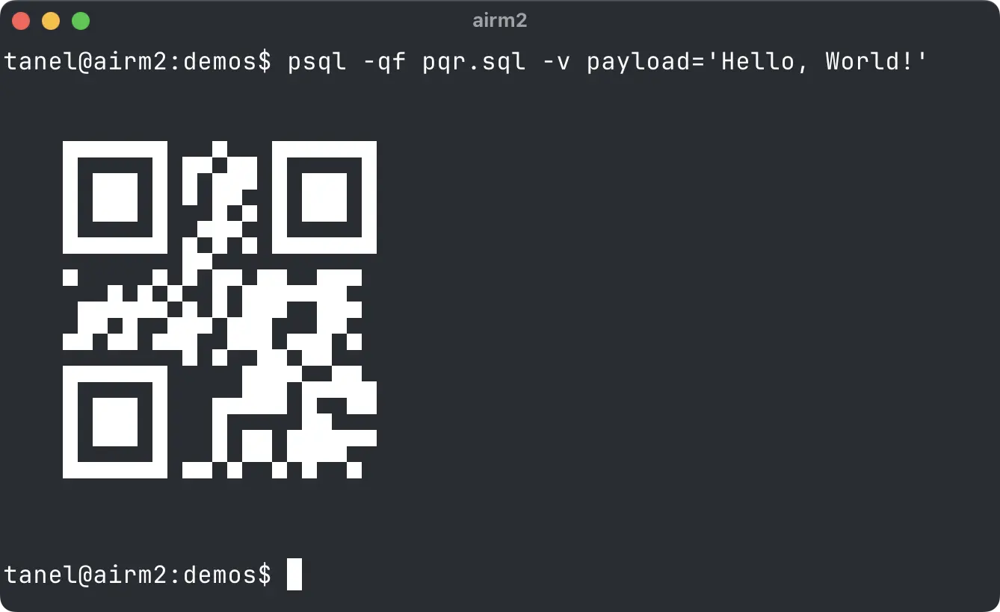
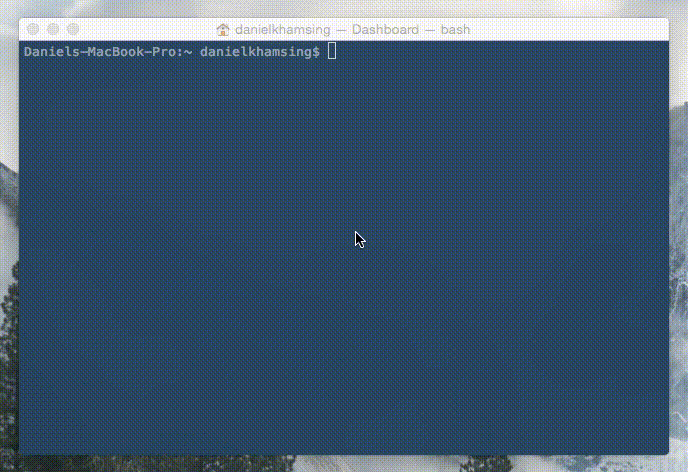

Random Weird Things - Part Ⅳ
Published at 2026-06-06T08:54:00+03:00
Every so often I stumble upon random, weird, and completely unexpected things on the internet. I thought it would be neat to share them here from time to time. This is the fourth run.
/\_/\ /\_/\ /\_/\
( o.o ) ( o.o ) ( o.o )
> ^ < > ^ < > ^ <
/\_/\ Miaaauuuu....
( o.o )
> ^ <
2024-07-05 Random Weird Things - Part Ⅰ
2025-02-08 Random Weird Things - Part Ⅱ
2025-08-15 Random Weird Things - Part Ⅲ
2026-06-06 Random Weird Things - Part Ⅳ (You are currently reading this)
Table of Contents
31. GUI Apps in Your Terminal
term.everything is a from-scratch Wayland compositor that renders GUI apps inside your terminal. GTK, Qt, whatever — it just grabs it and draws it right there. You can run Firefox or GIMP over SSH and interact with it using your mouse. No X forwarding, no latency nonsense. It actually works.

term.everything
32. TempleOS
Terry A. Davis spent years single-handedly building a complete 64-bit operating system from scratch because God told him to. It runs at 640×480, uses a custom language called HolyC, has its own compiler, and is designed as a temple. Boot it up and you get scripture, a talking parrot, and probably the weirdest OS you'll ever see. One of the most fascinating stories in computing.

TempleOS
33. LLM via DNS
You can query an LLM using nothing but DNS. Just run dig @ch.at "what is golang" TXT +short and you get back an answer in the TXT records. No browser, no API key. It even works over SSH tunnels.
$ dig @ch.at "what is golang" TXT +short
"Golang, or Go, is an open-source programming language developed by Google.
It was created to simplify the development of reliable and efficient software.
Go is known for its simplicity, strong concurrency support, and performance
comparable to C or C++. I" "t features garbage collection, type safety, and
built-in support for concurrent programming through goroutines and channels.
Go is widely used for web servers, cloud services, and distributed systems due
to its efficiency and ease of deployme..."
34. Black Hole in ~125 Bytes
Thi le in your browser tab. No frameworks, no libraries, just code-golf magic. I stared at it way longer than I care to admit.
Black Hole
35. loss32: Win32 on Linux
loss32 is a Linux distro where the entire desktop is classic Win32 apps running natively. ReactOS + WINE on steroids. You get the Windows 98/2000 vibe on a modern Linux kernel. It's not trying to be practical — it's pure nostalgia for people who miss the old Windows desktop but don't want the actual Windows.

loss32
36. LLM Rescuer 🤖💰
LLM Rescuer is a tiny Ruby gem that hooks into Ruby's method dispatch so that calling a method on nil doesn't crash — it asks an LLM what the return value should be instead. When a NoMethodError would normally explode, the gem catches it, packages up the context (what method was called, what the variable name suggests, maybe the surrounding code), fires that off to an actual LLM API, and returns whatever the model hallucinates as sensible.
So user.email on a nil user doesn't die. It asks the LLM "someone called .email on a user that turned out to be nil, what should I return?" and the model says "probably 'no-reply@example.com'". The gem swallows the error and hands you that string.
It tries to keep API costs down by sending only minimal context — just the method name and variable name rather than your whole codebase — but every nil-hit still costs tokens and adds latency.
This is runtime monkey-patching powered by a remote AI. Your nil bugs don't crash, they silently return AI-guessed values. In production this would be a debugging nightmare.
Examples:
# Classic nil safety
user = find_user(id: "nonexistent") # returns nil
puts user.email
# AI: "Analyzing context... user seems to need an email...
# returning 'no-reply@example.com'"
# Shopping cart magic
cart = session[:cart] # nil because session expired
total = cart.total_price
# AI: "This looks like e-commerce. Based on similar patterns,
# I'll return 0.0 to avoid charging $nil"
# The existential crisis
meaning_of_life = nil
answer = meaning_of_life.to_i
# AI: "Clearly this should be 42. I've read Douglas Adams."
LLM Rescuer
37. Filesystem Backed by an LLM
Mount a folder via FUSE, and every time you read or write a file, an LLM decides what the contents should be. There's a real working implementation. You literally cat a file and the LLM generates the output on the fly.
Example usage:
$ echo "a nginx config for a reverse proxy to localhost:8080" > /mnt/llmfs/nginx.conf
$ cat /mnt/llmfs/nginx.conf
server {
listen 80;
location / {
proxy_pass http://localhost:8080;
}
}
$ echo "my todo list for today" > /mnt/llmfs/todo.txt
$ cat /mnt/llmfs/todo.txt
- Write blog post
- Fix that bug in prod
- Drink coffee
$ cat /mnt/llmfs/todo.txt
- Write blog post (done?)
- Fix that bug in prod
- Drink more coffee
The LLM hallucinates the file contents every single read. Your todo list literally mutates when you look at it. Want a config file? Just describe it in the filename or write a prompt into it. Equal parts brilliant and terrifying.
Filesystem Backed by an LLM
38. QR Code with Pure SQL in Postgres
Someone generated a full QR code using nothing but SQL queries inside PostgreSQL. No extensions, no external tools — just raw Postgres doing things it was never meant to do. I ran the example and watched a QR code materialize in the query result. Mad stuff.

Pure SQL QR Code
39. The SL Train in Your Terminal
You mistype ls as sl and a steam locomotive comes chugging across your terminal. The SL program has been around for decades and it still cracks me up. There's even a flying train variant.

sl
40. URL in C Code Puzzle
The following C program compiles and runs perfectly:
#include <stdio.h>
int main(void) {
https://foo.zone
printf("hello, world\n");
return 0;
}
The https: becomes a label, the //foo.zone is just a comment. C parser shenanigans.
Found something weird lately? Send me a link!
E-Mail your comments to paul@nospam.buetow.org :-)
Back to the main site